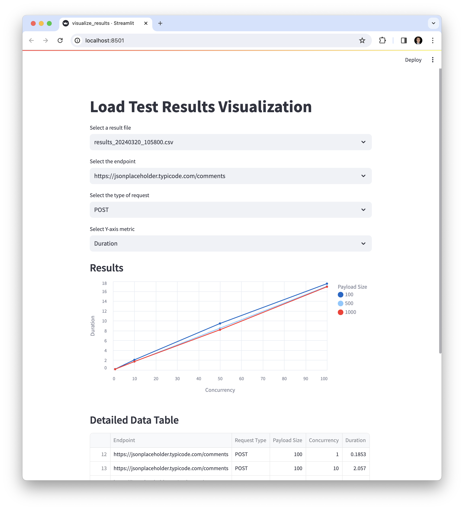

Overview
loadtest is a general-purpose HTTP load-testing and benchmarking library.
Docs can be found here https://wesslen.github.io/loadtest/.
Setup
You can install the package via pip:
pip install "loadtest @ git+https://github.com/wesslen/loadtest"
For the development, run:
$ git clone https://github.com/wesslen/loadtest.git
$ python3.10 -m venv venv
$ source venv/bin/activate
(venv) $ pip install -e .
This repo was developed using Python 3.10 and Mac/Unix. It has not yet been tested on different Python versions and OS (e.g., Windows).
Execute
(venv) $ python -m loadtest
python -m loadtest
┏━━━━━━━━━━━━━━━━━━━━━━┳━━━━━━━━━━━━━━━━━━━━━━━━━━━━━━━━━━━━━━━┓
┃ Metric ┃ Value ┃
┡━━━━━━━━━━━━━━━━━━━━━━╇━━━━━━━━━━━━━━━━━━━━━━━━━━━━━━━━━━━━━━━┩
│ BASE_URL │ https://jsonplaceholder.typicode.com/ │
│ URL │ comments │
│ Total Requests │ 100 │
│ Failed Requests │ 0 │
│ Median Latency │ 0.1623 seconds │
│ 75% Latency │ 0.1676 seconds │
│ 95% Latency │ 0.2029 seconds │
│ 99% Latency │ 0.2076 seconds │
└──────────────────────┴───────────────────────────────────────┘
Since loadtest is a typer function, you may use --help to provide simple docs:
(venv) $ python -m loadtest --help
Executes a simple HTTP benchmarking tool that performs a specified number of HTTP requests
to a given URL, displays the results including various latency metrics, and handles
concurrent requests.
╭─ Options ────────────────────────────────────────────────────────────────────────────────╮
│ --base-url TEXT The Base URL to benchmark. │
│ [default: │
│ https://jsonplaceholder.typi… │
│ --url TEXT The URL to benchmark. │
│ [default: comments] │
│ --num-requests INTEGER Total number of requests to │
│ perform. │
│ [default: 100] │
│ --method TEXT HTTP method to use. │
│ [default: GET] │
│ --concurrency INTEGER Number of concurrent │
│ requests. │
│ [default: 1] │
│ --install-completion [bash|zsh|fish|powershell|pws Install completion for the │
│ h] specified shell. │
│ [default: None] │
│ --show-completion [bash|zsh|fish|powershell|pws Show completion for the │
│ h] specified shell, to copy it │
│ or customize the │
│ installation. │
│ [default: None] │
│ --help Show this message and exit. │
╰──────────────────────────────────────────────────────────────────────────────────────────╯
Tests
Next, you may modify the load test matrix by modifying the file loadtest/test_config.json:
{
"endpoints": [
"https://jsonplaceholder.typicode.com/comments",
"https://jsonplaceholder.typicode.com/todos"
],
"request_types": ["GET", "POST"],
"payload_sizes": [100, 500, 1000],
"concurrency_levels": [1, 10, 50, 100]
}
By default, I'm using these ranges. You would want to adjust these values to reflect realistic scenarios for the application being tested.
I also used jsonplaceholder's default API's as dummy endpoints. You would want to change these to reflect the endpoint you want to test.
# from the root
(venv) $ python -m loadtest.run_tests full
Executed 1 GET requests to https://jsonplaceholder.typicode.com/comments with payload size 100 bytes in 0.23 seconds.
Executed 10 GET requests to https://jsonplaceholder.typicode.com/comments with payload size 100 bytes in 1.71 seconds.
...
Alternatively, you may run a fractional by running:
# from the root
(venv) $ python -m loadtest.run_tests fractional 0.5
Executed 1 GET requests to https://jsonplaceholder.typicode.com/comments with payload size 100 bytes in 0.23 seconds.
Executed 50 GET requests to https://jsonplaceholder.typicode.com/comments with payload size 500 bytes in 8.53 seconds.
...
This test will print results to console as well as save results as a .csv file in loadtest/data with a timestamped named.
(venv) $ python -m loadtest.run_tests --help
Usage: python -m loadtest.run_tests [OPTIONS]
Executes a series of load tests based on configurations defined in a JSON file, allowing for either full or fractional testing. The script
generates a test matrix from the configuration, runs the tests as per the matrix, and saves the results to a specified output directory.
╭─ Options ────────────────────────────────────────────────────────────────────────────────────────────────────────────────────────────────────╮
│ --config-path TEXT The path to the configuration JSON file. [default: loadtest/test_config.json] │
│ --data-dir TEXT The directory where the output results will be saved. [default: loadtest/data] │
│ --design-type TEXT The design type of the test matrix: 'full' or 'fractional'. [default: full] │
│ --fraction FLOAT The fraction of the test matrix to use, required only if design_type is │
│ 'fractional'. │
│ [default: None] │
│ --install-completion [bash|zsh|fish|powershell|pwsh] Install completion for the specified shell. [default: None] │
│ --show-completion [bash|zsh|fish|powershell|pwsh] Show completion for the specified shell, to copy it or customize the │
│ installation. │
│ [default: None] │
│ --help Show this message and exit. │
╰──────────────────────────────────────────────────────────────────────────────────────────────────────────────────────────────────────────────╯
Visualizing Tests
You may run a streamlit app to visualize the results by running:
(venv) $ python -m streamlit run loadtest/visualize_results.py

Within the app, you can select options based on:
- the file (timestamp of the run)
- endpoint
- type of request:
GETvs.POST - y axis metric:
Duration(in seconds) orFailures